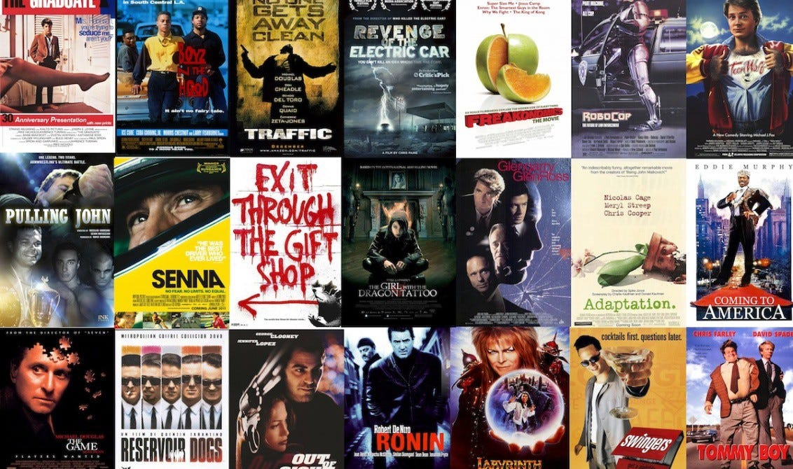

Reinforcement Learning Movie Recommendation System

Project Overview
This project implements an innovative movie recommendation system using reinforcement learning techniques. Unlike traditional collaborative filtering methods, our approach employs Q-learning to create a one-to-one mapping from movies to highly relevant recommendations. The system learns from user behavior and movie similarity to suggest films that fans of a particular movie would enjoy.
The Challenge
While recommendation systems typically rely on collaborative filtering, we wanted to explore whether reinforcement learning could provide an effective alternative. This approach is interesting because it learns from experience which movies to recommend, somewhat like how humans watch movies and develop an understanding of which ones would appeal to similar audiences.
Data Source
We utilized the MovieLens 25M dataset, which contains: - 25 million starred movie reviews across 62,000+ movies by 162,000+ users - Over 1,000 genome tags for each movie with relevance scores (0-1) - User-generated tags and ratings
Methodology
Q-Learning Framework
Our core innovation is applying Q-learning to the recommendation problem: - States: Individual movies in our Q-table - Actions: Transitioning to another movie reviewed by the same user - Rewards: Based on the user's rating of the recommended movie and calculated similarity scores - Q-function: Learns the optimal policy for recommending movies
Movie Similarity Scoring
A key improvement in our model was the introduction of movie similarity scores: - Calculated using genome tag relevance for each movie pair - Allowed recommendations to consider content similarity, not just ratings - Helped prevent popular but contextually irrelevant recommendations
Training Process
Our final model was trained through: 1. 5,000 episodes with an epsilon-greedy approach (initial ε = 0.9) 2. Gradual reduction of exploration via decay rate (final ε ≈ 0.5) 3. Limited dataset to movies with over 2,000 reviews (2,428 movies total) 4. Similarity-weighted reward functions
Results
Our reinforcement learning approach demonstrated several advantages: - Generated 1,159 unique movie recommendations across our dataset - Reduced bias toward universally popular movies (no movie recommended more than 17 times) - Produced contextually relevant recommendations that passed the "eye test" - Showed consistent improvement in average reward per timestep throughout training
Interactive Demo
We developed a React application that allows users to: - Input a favorite movie - Receive a personalized recommendation based on our Q-learning model - Experiment with an extended feature for multi-movie input recommendations
Future Development
Potential enhancements include: - Implementing Apache Spark for improved scalability - Leveraging the Northeastern Discovery network for computational resources - Further refining similarity metrics to enhance recommendation relevance - Expanding our approach to larger datasets
Technologies Used
- Python
- Pandas
- NumPy
- React
- MovieLens Dataset
- Q-Learning